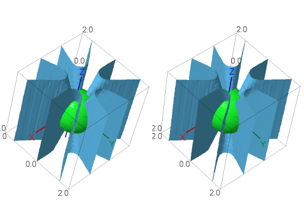
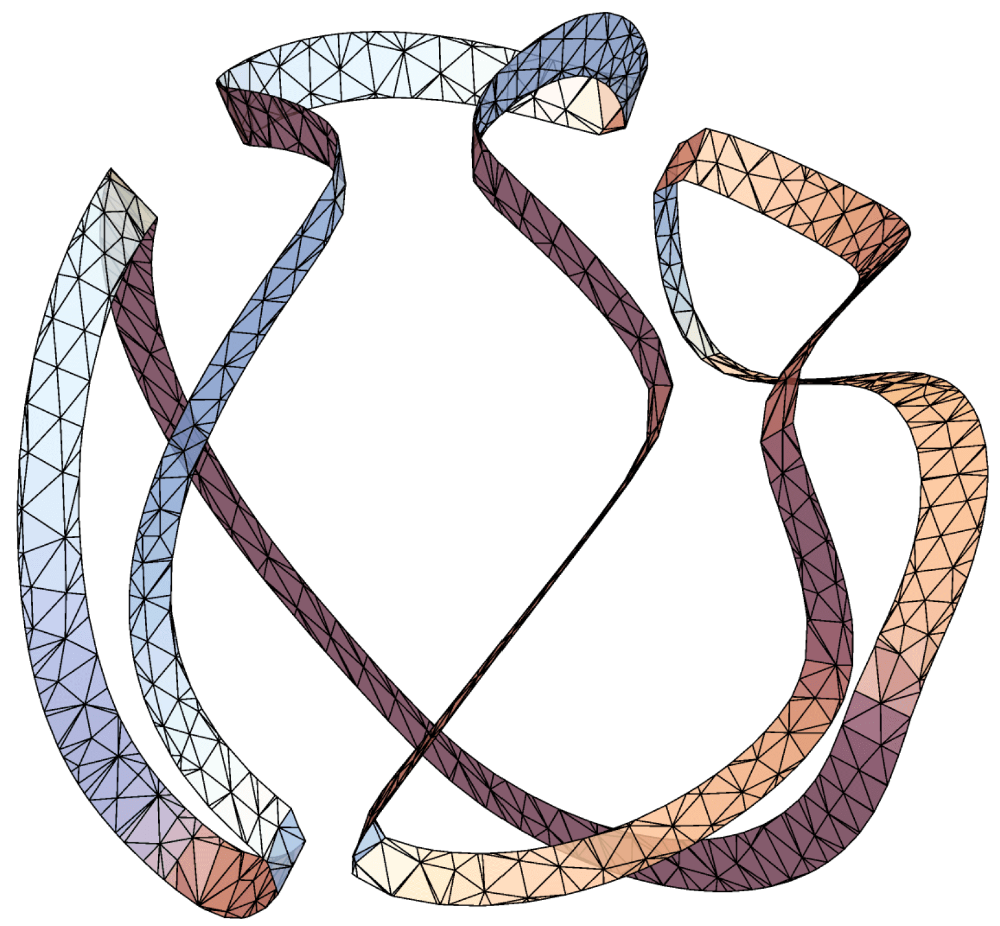
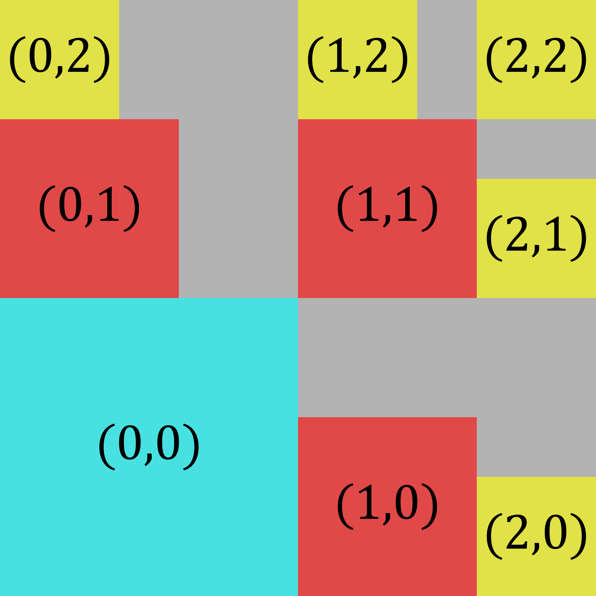
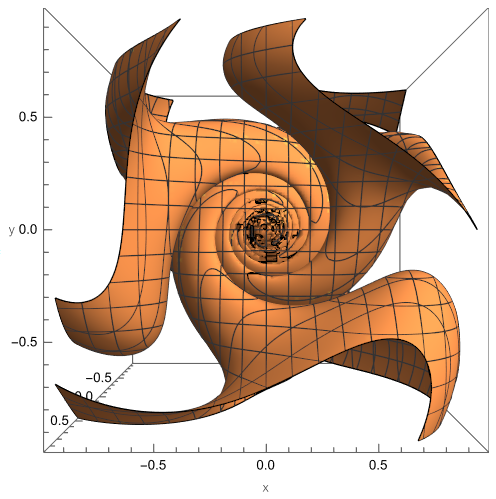

Matthew Badger
University of Connecticut
Department of Mathematics
341 Mansfield Road, U-1009
Storrs, CT 06269-1009
Office: Monteith 326
Email: firstname.lastname _at_ uconn.edu
| Fall 2024 Office Hours |
| M | By Appointment |
| Tu | By Appointment |
| W | By Appointment |
| Th | 1:15-3:15 |
| F | By Appointment |
Office hours are held in
Monteith 326
Teaching
[Math Course Schedules: Current Semester]
Spring 2024
Math 3151 Analysis II
Course materials for students available on HuskyCT
Ph.D. Students
Lisa Naples, Ph.D. August 2020
I am happy to advise Ph.D. students who would like to carry out research at the interface of analysis and geometry.
I can support a UConn graduate student as a research assistant (no teaching duties) in Summer 2024, Fall 2024, and Summer 2025.
Research
A non-technical description of my research with Raanan Schul on rectifiable measures can be found here.
Here is a picture related to my "Harmonic polynomials..." and "Flat points..." papers. The zero sets of homogeneous harmonic polynomials in x,y,z of odd degree may separate space into two components (cross your eyes to see a stereographic picture):

500x4y-1000x2y3+100y5
-5(x4+y4)z+10(x2+y2)z3+2z5=0 intersecting the unit sphere
Grants and Fellowships
- NSF DMS 2403968
- Analysis Program. Conference Grant. Geometry of Measures and Free Boundaries 2024.
- NSF DMS 2154047
- Analysis Program. Standard Grant. 2022 – 2025
- NSF DMS 1901256
- Analysis Program. Conference Grant. Northeast Analysis Network. 2019 – 2023
- NSF DMS 1650546
- Analysis Program. CAREER Award. 2017 – 2022
- NSF DMS 1500382
- Analysis Program. Standard Grant. 2015 – 2018
- NSF DMS 1203497
- 2012 NSF Mathematical Sciences Postdoctoral Research Fellowship
Publications and Preprints
[Statistics] Newest preprints/papers are listed first.

- #27 On the number of nodal domains of homogeneous caloric polynomials
(arXiv:2401.07268)
- (with Cole Jeznach)
- [Click to Show/Hide Abstract]
- We investigate the minimum and maximum number of nodal domains across all time-dependent homogeneous caloric polynomials of degree d in Rn×Rn (space × time), i.e., polynomial solutions of the heat equation satisfying ∂t≢0 and p(λx, λ2t)=λdp(x,t) for all x∈Rn, t∈R, and λ>0. When n=1, it is classically the number of nodal domains is precisely $⌈d/2⌉. When n=2, we prove that the minimum number of nodal domains is 2 if d≢0 (mod 4) and is 3 if d≡0 (mod 4). When n≥3, we prove that the minimum number of nodal domains is 2 for all d. Finally, we show that the maximum number of nodal domains is Θ(dn) as d→∞ and lies between ⌊d/n⌋n and "n+d choose n" for all n and d. As an application and motivation for counting nodal domains, we confirm existence of the singular strata in Mourgoglou and Puliatti's two-phase free boundary regularity theorem for caloric measure.
- Status: preprint, submitted.

- #26 Square packings and rectifiable doubling measures
(arXiv:2309.01283)
- (with Raanan Schul)
- [Click to Show/Hide Abstract]
- We prove that for all integers 2 ≤ m ≤ d-1, there exists doubling measures on Rd with full support that are m-rectifiable and purely (m-1)-unrectifiable in the sense of Federer (i.e. without assuming μ≪Hm). The corresponding result for 1-rectifiable measures is originally due to Garnett, Killip, and Schul (2010). Our construction of higher-dimensional Lipschitz images is informed by a simple observation about square packing in the plane: N axis-parallel squares of side length s pack inside of a square of side length ⌈N1/2⌉s. The approach is robust and when combined with standard metric geometry techniques allows for constructions in complete Ahlfors regular metric spaces. One consequence of the main theorem is that for each m=2,3,4 and s< there exist doubling measures μ on the Heisenberg group H1 and Lipschitz maps f:E⊂Rm→H1 such that μ≪H^s-ε for all ε>, f(E) has Hausdorff dimension s, and μ(f(E))>0. This is striking, because Hm(f(E))=0 for every Lipschitz map f:E⊂Rm→H1 by a theorem of Ambrosio and Kirchheim (2000). Another application of the square packing construction is that every compact metric space X of Assouad dimension strictly less than m is a Lipschitz image of a compact set E⊂[0,1]m. Of independent interest, we record the existence of doubling measures on complete Ahlfors regular metric spaces with prescribed lower and upper Hausdorff and packing dimensions.
- Status: accepted. To appear in Discrete Analysis
- #25 A practical guide to writing an NSF grant proposal (Published Version)
- This article for the Early Career Section of the AMS Notices was written at the request of the editors.
- Citation: M. Badger, A practical guide to writing an NSF grant proposal, Notices Amer. Math. Soc. 70 (2023), no. 7, 1089-1093.

- #24 Slowly vanishing mean oscillations: non-uniqueness of blow-ups in a two-phase free boundary problem
(arXiv:2210.17531 | Published Version)
- (with Max Engelstein and Tatiana Toro)
- Dedicado a Carlos Kenig, un gran maestro y amigo en conmemoración de sus 70 años
- [Click to Show/Hide Abstract]
- In Kenig and Toro's two-phase free boundary problem, one studies how the regularity of the Radon-Nikodym derivative h of exterior harmonic measure with respect to interior harmonic measure on complementary NTA domains controls the geometry of their common boundary. It is now known that log h being Holder continuous implies that pointwise the boundary has a unique blow-up, which is the zero set of a homogeneous harmonic polynomial. In this note, we give examples of domains with log h being continuous whose boundaries have points with non-unique blow-ups. Philosophically the examples arise from oscillating or rotating a blow-up limit by an infinite amount, but very slowly.
- Status: accepted, to appear in Vietnam J. Math., online first, doi:10.1007/s10013-023-00668-6
- #23 Subsets of rectifiable curves in Banach spaces II: universal estimates for almost flat arcs
(arXiv:2208.10288 | Published Version)
- (with Sean McCurdy)
- [Click to Show/Hide Abstract]
- We prove that in any Banach space the set of windows in which a rectifiable curve resembles two or more straight line segments is quantitatively small with constants that are independent of the curve, the dimension of the space, and the choice of norm. Together with Part I, this completes the proof of the necessary half of the Analyst's Traveling Salesman theorem with sharp exponent in uniformly convex spaces.
- Citation: M. Badger, S. McCurdy, Subsets of rectifiable curves in Banach spaces II: universal estimates for almost flat arcs, Illinois J. Math. 67 (2023), no. 2, 275-331.
- #22 Lower bounds on Bourgain's constant for harmonic measure
(arXiv:2205.15101 | Published Version)
- (with Alyssa Genschaw)
- [Click to Show/Hide Abstract]
- For every n≥2, Bourgain's constant bn is the largest number such that the (upper) Hausdorff dimension of harmonic measure is at most n-bn for every domain in Rn on which harmonic measure is defined. Jones and Wolff (1988) proved that b2=1. When n≥3, Bourgain (1987) proved that bn and Wolff (1995) produced examples showing bn<1. Refining Bourgain's original outline, we prove that bn≥c*n-2n(n-1)/ln(n) for all n≥3, where c>0 is a constant that is independent of n. We further estimate b3≥1×10-15 and b4≥2×10-26.
- Citation: M. Badger, A. Genschaw, Lower bounds on Bourgain's constant for harmonic measure, Canad. J. Math., First View, 1--20. doi:10.4153/S0008414X2300069X
- #21 Identifying 1-rectifiable measures in Carnot groups
(arXiv:2109.06753 | Published Version)
- (with Sean Li and Scott Zimmerman)
- [Click to Show/Hide Abstract]
- We continue to develop a program in geometric measure theory that seeks to identify how measures in a space interact with canonical families of sets in the space. In particular, extending a theorem of the first author and R. Schul in Euclidean space, for an arbitrary locally finite Borel measure in an arbitrary Carnot group, we develop tests that identify the part of the measure that is carried by rectifiable curves and the part of the measure that is singular to rectifiable curves. Our main result is entwined with an extension of the Analyst's Traveling Salesman Theorem, which characterizes subsets of rectifiable curves in R2 (P. Jones, 1990), in Rn (K. Okikolu, 1992), or in an arbitrary Carnot group (the second author) in terms of local geometric least squares data called Jones' β-numbers. In a secondary result, we implement the Garnett-Killip-Schul construction of a doubling measure in Rn that charges a rectifiable curve in an arbitrary complete, quasiconvex, doubling metric space.
- Citation: M. Badger, S. Li, S. Zimmerman, Identifying 1-rectifiable measures in Carnot groups, Anal. Geom. Metr. Spaces 11 (2023), Paper no. 20230102, 40 pp.
- #20 Hausdorff dimension of caloric measure
(arXiv:2108.12340)
- (with Alyssa Genschaw)
- [Click to Show/Hide Abstract]
- We examine caloric measures on general domains in Rn+1 = RnxR (space x times) from the perspective of geometric measure theory. On one hand, we give a direct proof of a consequence of a theorem of Taylor and Watson (1985) that the lower parabolic Hausdorff dimension of caloric measure is at least n and is absolutely continuous with respect to the n-dimensional parabolic Hausdorff measure. On the other hand, we prove that the upper parabolic Hausdorff dimension of caloric measure is at most n+2-βn, where βn>0 depends only on n. Analogous bounds for harmonic measures were first shown by Nevanlinna (1934) and Bourgain (1987). Heuristically, we show that the density of obstacles in a cube needed to make it unlikely that a Brownian motion started outside of the cube exits a domain near the center of the cube must be chosen according to the ambient dimension.
In the course of the proof, we give a caloric measure analogue of Bourgain's alternative: with certain dimensional constraints on the size and position of cubes, for any closed set E in Rn, either (i) the part of E in Q has relatively large caloric measure in Q minus E for every pole in F or (ii) the part of E in Q* has relatively small ρ-dimensional parabolic Hausdorff content for every n < ρ ≤ n+2, where Q is a cube, F is a subcube of Q aligned at the center of the top time-face, and Q* is a subcube of Q that is close to, but separated backwards-in-time from F. Further, we supply a version of the strong Markov property for caloric measures.
- Status: accepted, to appear in Amer. J. Math.
- #19 Radon measures and Lipschitz graphs
(arXiv:2007.08503 | Published Version)
- (with Lisa Naples)
- [Click to Show/Hide Abstract]
- For all 1≤m≤n-1, we investigate the interaction of locally finite measures in Rn with the family of m-dimensional Lipschitz graphs. For instance, we characterize Radon measures μ, which are carried by Lipschitz graphs in the sense that there exist graphs Γ1, Γ2, ... such that μ(Rn\Γi)=0, using only countably many evaluations of the measure. This problem in geometric measure theory was classically studied within smaller classes of measures, e.g. for the restrictions of m-dimensional Hausdorff measure Hm to E in Rn with 0<Hm(E)<∞. However, an example of Csörnyei, Käenmäki, Rajala, and Suomala shows that classical methods are insufficient to detect when a general measure charges a Lipschitz graph. To develop a characterization of Lipschitz graph rectifiability for arbitrary Radon measures, we look at the behavior of coarse doubling ratios of the measure on dyadic cubes that intersect conical annuli. This extends a characterization of graph rectifiability for pointwise doubling measures by Naples by mimicking the approach used in the characterization of Radon measures carried by rectifiable curves by Badger and Schul.
- Citation: M. Badger, L. Naples, Radon measures and Lipschitz graphs, Bull. London Math. Soc. 53 (2021), no. 3, 921-936. https://doi.org/10.1112/blms.12473
- #18 Subsets of rectifiable curves in Banach spaces I: sharp exponents in traveling salesman theorems
(arXiv:2002.11878 | Published Version)
- (with Sean McCurdy)
- [Click to Show/Hide Abstract]
- The Analyst's Traveling Salesman Problem is to find a characterization of subsets of rectifiable curves in a metric space. This problem was introduced and solved in the plane by Jones in 1990 and subsequently solved in higher-dimensional Euclidean spaces by Okikiolu in 1992 and in the infinite-dimensional Hilbert space ℓ2 by Schul in 2007. In this paper, we establish sharp extensions of Schul's necessary and sufficient conditions for a bounded set E ⊂ ℓp to be contained in a rectifiable curve from p=2 to 1<p<∞. While the necessary and sufficient conditions coincide when p=2, we demonstrate that there is a strict gap between the necessary condition and sufficient condition when p≠2. We also identify and correct technical errors in the proof by Schul. This investigation is partly motivated by recent work of Edelen, Naber, and Valtorta on Reifenberg-type theorems in Banach spaces and complements work of Hahlomaa and recent work of David and Schul on the Analyst's TSP in general metric spaces.
- Note: While revising an earlier draft of the manuscript, we identified a mistake in Schul's 2007 proof of the necessary conditions in the traveling salesman theorem in infinite-dimensional Hilbert space. We show how to correct the error in a minimal way, leaving the outline of virtually all of the original proofs intact.
- Citation: M. Badger, S. McCurdy, Subsets of rectifiable curves in Banach spaces I: sharp exponents in traveling salesman theorems, Illinois J. Math. 67 (2023), no. 2, 203-274.
- #17 Hölder parameterization of iterated function systems and a self-affine phenomenon
(arXiv:1910.08850 | Published Version)
- (with Vyron Vellis)
- [Click to Show/Hide Abstract]
- We investigate the Hölder geometry of curves generated by iterated function systems (IFS) in a complete metric space. A theorem of Hata from 1985 asserts that every connected attractor of an IFS is locally connected and path-connected. First we give a quantitative strengthening of Hata's theorem. We first prove that every connected attractor of an IFS is 1/s-Hölder path-connected, where s is the similarity dimension of the IFS. Then we show that every connected attractor of an IFS is parameterized by a 1/a-Hölder curve for all a>s. At the endpoint, a=s, a theorem of Remes from 1998 already established that connected self-similar sets in Euclidean space that satisfy the open set condition are parameterized by 1/s-Hölder curves. In a secondary result, we show how to promote Remes' theorem to self-similar sets in complete metric spaces, but in this setting require the attractor to have positive s-dimensional Hausdorff measure in lieu of the open set condition. To close the paper, we determine sharp Hölder exponents of parameterizations in the class of connected self-affine Bedford-McMullen carpets and build parameterizations of self-affine sponges. An interesting phenomenon emerges in the self-affine setting. While the optimal parameter s for a self-similar curve in Rn is at most n, the optimal parameter s for a self-affine curve in Rn may be strictly greater than n.
- Citation: M. Badger, V. Vellis, Hölder parameterization of iterated function systems and a self-affine phenomenon, Anal. Geom. Metr. Spaces 9 (2021), no. 1, 90-119.
- #16 Regularity of the singular set in a two-phase problem for harmonic measure with Hölder data
(arXiv:1807.08002 | Published Version)
- (with Max Engelstein and Tatiana Toro)
- [Click to Show/Hide Abstract]
- In non-variational two-phase free boundary problems for harmonic measure, we examine how the relationship between the interior and exterior harmonic measures of a domain in n-dimensional Euclidean space influences the geometry of its boundary. This type of free boundary problem was initially studied by Kenig and Toro in 2006 and was further examined in a series of separate and joint investigations by several authors. The focus of the present paper is on the singular set in the free boundary, where the boundary looks infinitesimally like zero sets of homogeneous harmonic polynomials of degree at least 2. We prove that if the Radon-Nikodym derivative of the exterior harmonic measure with respect to the interior harmonic measure has a H\"older continuous logarithm, then the free boundary admits unique geometric blowups at every singular point and the singular set can be covered by countably many C1,β submanifolds of dimension at most n-3. This result is partly obtained by adapting tools such as Garofalo and Petrosyan's Weiss type monotonicity formula and an epiperimetric inequality for harmonic functions from the variational to the non-variational setting.
- Citation: M. Badger, M. Engelstein, T. Toro, Regularity of the singular set in a two-phase problem for harmonic measure with Hölder data, Rev. Mat. Iberoam. 36 (2020), no. 5, 1375–1408. https://doi.org/10.4171/rmi/1170
- #15 Hölder curves and parameterizations in the Analyst's Traveling Salesman theorem
(arXiv:1806.01197 | Published Version)
- (with Lisa Naples and Vyron Vellis)
- [Click to Show/Hide Abstract]
- We investigate the geometry of sets in Euclidean and infinite-dimensional Hilbert spaces. We establish sufficient conditions that ensure a set of points is contained in the image of a (1/s)-Hölder continuous map f:[0,1] → l2, with s>1. Our results are motivated by and generalize the "sufficient half" of the Analyst's Traveling Salesman Theorem, which characterizes subsets of rectifiable curves in RN or l2 in terms of a quadratic sum of linear approximation numbers called Jones' beta numbers. The original proof of the Analyst's Traveling Salesman Theorem depends on a well-known metric characterization of rectifiable curves from the 1920s, which is not available for higher-dimensional curves such as Hölder curves. To overcome this obstacle, we reimagine Jones' non-parametric proof and show how to construct parameterizations of the intermediate approximating curves f_k([0,1]). We then find conditions in terms of tube approximations that ensure the approximating curves converge to a Hölder curve. As an application, we provide sufficient conditions to guarantee fractional rectifiability of pointwise doubling measures in RN.
- Citation: M. Badger, L. Naples, V. Vellis, Hölder curves and parameterizations in the Analyst's Traveling Salesman theorem, Adv. Math. 349 (2019), 564-647. doi:10.1016/j.aim.2019.04.011
- #14 Generalized rectifiability of measures and the identification problem
(arXiv:1803.10022 | Published Version)
- [Click to Show/Hide Abstract]
- One goal of geometric measure theory is to understand how measures in the plane or higher dimensional Euclidean space interact with families of lower dimensional sets. An important dichotomy arises between the class of rectifiable measures, which give full measure to a countable union of the lower dimensional sets, and the class of purely unrectifiable measures, which assign measure zero to each distinguished set. There are several commonly used definitions of rectifiable and purely unrectifiable measures in the literature (using different families of lower dimensional sets such as Lipschitz images of subspaces or Lipschitz graphs), but all of them can be encoded using the same framework. In this paper, we describe a framework for generalized rectifiability, review a selection of classical results on rectifiable measures in this context, and survey recent advances on the identification problem for Radon measures that are carried by Lipschitz or Hölder or C1,α images of Euclidean subspaces, including theorems of Azzam-Tolsa, Badger-Schul, Badger-Vellis, Edelen-Naber-Valtorta, Ghinassi, and Tolsa-Toro.
- Note: This survey paper is based on a talk at the Northeast Analysis Network Conference held in Syracuse, New York in September 2017.
- Citation: M. Badger, Generalized rectifiability of measures and the identification problem, Complex Anal. Synerg. 5 (2019), 2.
- #13 Geometry of measures in real dimensions via Hölder parameterizations
(arXiv:1706.07846 | Published Version)
- (with Vyron Vellis)
- [Click to Show/Hide Abstract]
- We investigate the influence that s-dimensional lower and upper Hausdorff densities have on the geometry of a Radon measure in Rn when s is a real number between 0 and n. This topic in geometric measure theory has been extensively studied when s is an integer. In this paper, we focus on the non-integer case, building upon a series of papers on s-sets by Martín and Mattila from 1988 to 2000. When 0<s<1, we prove that measures with almost everywhere positive and lower density and finite upper density are carried by countably many bi-Lipschitz curves. When 1≤s<n, we identify conditions on the lower density that ensure the measure is either carried by or singular to (1/s)-Hölder curves. The latter results extend part of the recent work of Badger and Schul, which examined the case s=1 (Lipschitz curves) in depth. Of further interest, we introduce Hölder and bi-Lipschitz parameterization theorems for Euclidean sets with "small" Assouad dimension.
- Citation: M. Badger, V. Vellis, Geometry of measures in real dimensions via Hölder parameterizations, J. Geom. Anal. 29 (2019), no. 2, 1153-1192. doi:10.1007/s12220-018-0034-2
- #12 Multiscale analysis of 1-rectifiable measures II: characterizations
(arXiv:1602.03823 | Published Version)
- (with Raanan Schul)
- [Click to Show/Hide Abstract]
- A measure is 1-rectifiable if there is a countable union of finite length curves whose complement has zero measure. We characterizae 1-rectifiable Radon measures in n-dimensional Euclidean space for all n≥2 in terms of positivity of the lower density and finiteness of a geometric square function, which loosely speaking, records in an L2 gauge the extent to which the measure admits approximate tangent lines, or has rapidly growing density rations, along its support. In contrast with the classical theorems of Besicovitch, Morse and Randolph, and Moore, we do not assume an a priori relationship between the measure and 1-dimensional Hausdorff measure. We also characterize purely 1-unrectifiable Radon measures, i.e. locally finite measures that give measure zero to every finite length curve. Characterizations of this form were originally conjectured to exist by P. Jones. Along the way, we develop an L2 variant of P. Jones' traveling salesman construction, which is of indepenedent interest.
- Citation: M. Badger, R. Schul, Multiscale analysis of 1-rectifiable measures II: characterizations, Anal. Geom. Metr. Spaces 5 (2017), no. 1, 1-39.
- Related: H. Martikainen and T. Orponen (arXiv:1604.04091) have constructed a finite measure in the plane with bounded density-normalized L2 Jones function and vanishing lower 1-density. This implies that our use of β** in Theorem D is sharp and answers a question we posed following Theorem E.
- #11 Structure of sets which are well approximated by zero sets of harmonic polynomials
(arXiv:1509.03211 | Published Version)
- (with Max Engelstein and Tatiana Toro)
- [Click to Show/Hide Abstract]
- The zero sets of harmonic polynomials play a crucial role in the study of the free boundary regularity problem for harmonic measure. In order to understand the fine structure of these free boundaries a detailed study of the singular points of these zero sets is required. In this paper we study how "degree k points" sit inside zero sets of harmonic polynomials in Rn of degree d (for all n ≥ 2 and 1 ≤ k ≤ d) and inside sets that admit arbitrarily good local approximations by zero sets of harmonic polynomials. We obtain a general structure theorem for the latter type of sets, including sharp Hausdorff and Minkowski dimension estimates on the singular set of "degree k points" (k ≥ 2) without proving uniqueness of blowups or aid of PDE methods such as monotonicity forumlas. In addition, we show that in the presence of a certain topological separation condition, the sharp dimension estimates improve and depend on the parity of k. An application is given to the two-phase free boundary regularity problem for harmonic measure below the continuous threshold introduced by Kenig and Toro.
- Citation: M. Badger, M. Engelstein, T. Toro, Structure of sets which are well approximated by zero sets of harmonic polynomials, Anal. PDE 10 (2017), no. 6, 1455-1495.
- #10 Rectifiability and elliptic measures on 1-sided NTA domains with Ahflors-David regular boundaries
(arXiv:1507.02039 | Published Version)
- (with Murat Akman, Steve Hofmann, and José María Martell)
- [Click to Show/Hide Abstract]
- Consider a 1-sided NTA domain (aka uniform domain) in Rn+1, n≥2, i.e. a domain which satisfies interior Corkscrew and Harnack Chain conditions, and assume the boundary of the domain is n-dimensional Ahflors-David regular. We characterize the rectifiability of the boundary in terms of absolute continuiuty of surface measure with respect to harmonic measure. We also show that these are equivalent to the fact that the boundary can be covered Hn-a.e. by a countable union of portions of boundaries of bounded chord-arc subdomains adn to the fact that the boundary possesses exterior corkscrew points in a qualitiative way Hn-a.e. Our methods apply to harmonic measure and also to elliptic measures associated with real symmetric second order divergence form elliptic operators with locally Lipschitz coefficients whose derivatives satisfy a natural qualitative Carleson condition.
- Citation: M. Akman, M. Badger, S. Hofmann, J.M. Martell, Rectifiability and elliptic measures on 1-sided NTA domains with Ahlfors-David regular boundaries, Trans. Amer. Math. Soc. 369 (2017), no. 8, 2017, 5711-5745.
- #9 Two sufficient conditions for rectifiable measures
(arXiv:1412.8357 | Published Version)
- (with Raanan Schul)
- [Click to Show/Hide Abstract]
- We identify two sufficient conditions for locally finite Borel measures on Rn to give full mass to a countable family of Lipschitz maps of Rm. The first condition, extending a prior result of Pajot, is a sufficient test in terms of Lp affine approximability for a locally finite Borel measure μ on Rn satisfying the global regularity hypothesis limsupr↓0 μ(B(x,r))/rm < ∞ at μ almost every x to be m-rectifiable in the sense above. The second condition is an assumption on the growth rate of the 1-density that ensures a locally finite Borel measure μ on Rn with limr↓0 μ(B(x,r))/r=∞ at μ almost every x in Rn is 1-rectifiable.
- Citation: M. Badger, R. Schul, Two sufficient conditions for rectifiable measures, Proc. Amer. Math. Soc. 144 (2016), 2445-2454.
- #8 Local set approximation: Mattila-Vuorinen type sets, Reifenberg type sets, and tangent sets
(arXiv:1409.7851 | Published Version)
- (with Stephen Lewis)
- [Click to Show/Hide Abstract]
- We investigate the interplay between the local and asymptotic geometry of a set A in Rn and the geometry of model sets, which approximate A locally uniformly on small scales. The framework for local set approximation developed in this paper unifies and extends ideas of Jones, Mattila and Vuorinen, Reifenberg, and Preiss. We indicate several applications of this framework to variational problems that arise in geometric measure theory and partial differential equations. For instance, we show that the singular part of the support of an (n-1)-dimensional asymptotically optimally doubling measure in Rn (n≥4) has upper Minkowski dimension at most n-4.
- Note: The arXiv version of the paper has outdated numbering. The published version is open access and is the authoritative version. On the other hand, the arXiv version has an additional example related to harmonic polynomials that the referee asked us to cut, but which is still interesting! See section 9.3 in the arXiv version.
- Citation: M. Badger, S. Lewis, Local set approximation: Mattila-Vuorinen type sets, Reifenberg type sets, and tangent sets, Forum Math. Sigma 3 (2015), e24, 63 pp.
- #7 Quasiconformal planes with bi-Lipschitz pieces and extensions of almost affine maps
(arXiv:1403.2991 | Published Version)
- (with Jonas Azzam, and Tatiana Toro)
- [Click to Show/Hide Abstract]
- A quasiplane is the image of an n-dimensional Euclidean subspace of RN (1 ≤ n ≤ N-1) under a quasiconformal map of RN. We give sufficient conditions in terms of the weak quasisymmetry constant of the underlying map for a quasiplane to be a bi-Lipschitz n-manifold and for a quasiplane to have big pieces of bi-Lipschitz images of Rn. One main novelty of these results is that we analyze quasiplanes in arbitrary codimension N-n. To establish the big pieces criterion, we prove new extension theorems for "almost affine" maps, which are of independent interest. This work is related to investigations by Tukia and Väisälä on extensions of quasisymmetric maps with small distortion.
- Citation: J. Azzam, M. Badger, T. Toro, Quasiconformal planes with bi-Lipschitz pieces and extensions of almost affine maps, Adv. Math. 275 (2015), 195-259.
- #6 Multiscale analysis of 1-rectifiable measures: necessary conditions
(arXiv:1307.0804 | Published Version)
- (with Raanan Schul)
- [Click to Show/Hide Abstract]
- We repurpose tools from the theory of quantitative rectifiability to study the qualitative rectifiability of measures in Rn, n > 2. To each locally finite Borel measure μ, we associate a function tJ2(μ,x) which uses a weighted sum to record how closely the mass of μ is concentrated on a line in the triples of dyadic cubes containing x. We show that tJ2(μ,x) < ∞ μ-a.e. is a necessary condition for μ to give full mass to a countable family of rectifiable curves. This confirms a conjecture of Peter Jones from 2000. A novelty of this result is that no assumption is made on the upper Hausdorff density of the measure. Thus we are able to analyze generic 1-rectifiable measures that are mutually singular with the 1-dimensional Hausdorff measure.
- Citation: M. Badger, R. Schul, Multiscale analysis of 1-rectifiable measures: necessary conditions, Math. Ann. 361 (2015), no. 3-4, 1055-1072.
- #5 Beurling's criterion and extremal metrics for Fuglede modulus
(arXiv:1207.5277 | Published Version)
- [Click to Show/Hide Abstract]
- For each 1 ≤ p < ∞, we formulate a necessary and sufficient condition for an admissible metric to be extremal for the Fuglede p-modulus of a system of measures. When p = 2, this characterization generalizes Beurling's criterion, a sufficient condition for an admissible metric to be extremal for the extremal length of a planar curve family. In addition, we prove that every non-negative Borel function in Euclidean space with positive and finite p-norm is extremal for the p-modulus of some curve family.
- Citation: M. Badger, Beurling's criterion and extremal metrics for Fuglede modulus, Ann. Acad. Sci. Fenn. Math. 38 (2013), 677-689.
- #4 Quasisymmetry and rectifiability of quasispheres
(arXiv:1201.1581 | Published Version)
- (with James T. Gill, Steffen Rohde, and Tatiana Toro)
- [Click to Show/Hide Abstract]
- We obtain Dini conditions with "exponent 2" that guarantee that an asymptotically conformal quasisphere is rectifiable. We also establish estimates for the weak quasisymmetry constant of a global K-quasiconformal map in neighborhoods with maximal dilitation close to 1.
- Citation: M. Badger, J.T. Gill, S. Rohde, T. Toro, Quasisymmetry and rectifiability of quasispheres, Trans. Amer. Math. Soc. 366 (2014), no. 3, 1413-1431.
- #3 Flat points in zero sets of harmonic polynomials and harmonic measure from two sides
(arXiv:1109.1427 | Published Version)
- [Click to Show/Hide Abstract]
- We obtain quantitative estimates of local flatness of zero sets of harmonic polynomials. There are two alternatives: at every point either the zero set stays uniformly far away from a hyperplane in the Hausdorff distance at all scales or the zero set becomes locally flat on small scales with arbitrarily small constant. An application is given to a free boundary problem for harmonic measure from two sides, where blow-ups of the boundary are zero sets of harmonic polynomials.
- Citation: M. Badger, Flat points in zero sets of harmonic polynomials and harmonic measure from two sides, J. London Math. Soc. 87 (2013), no. 1, 111-137.
- #2 Null sets of harmonic measure on NTA domains: Lipschitz approximation revisited
(arXiv:1003.4547 | Published Version)
- [Click to Show/Hide Abstract]
- We show the David-Jerison construction of big pieces of Lipschitz graphs inside a corkscrew domain does not require its surface measure be upper Ahlfors regular. Thus we can study absolute continuity of harmonic measure and surface measure on NTA domains of locally finite perimeter using Lipschitz approximations. A partial analogue of the F. and M. Riesz Theorem for simply connected planar domains is obtained for NTA domains in space. As a consequence every Wolff snowflake has infinite surface measure.
- Citation: M. Badger, Null sets of harmonic measure on NTA domains: Lipschitz approximation revisited, Math. Z. 270 (2012), no. 1-2, 241-262.
- #1 Harmonic polynomials and tangent measures of harmonic measure
(arXiv:0910.2591 | Published Version)
- [Click to Show/Hide Abstract]
- We show that on an NTA domain if each tangent measure to harmonic measure at a point is a polynomial harmonic measure then the associated polynomials are homogeneous. Geometric information for solutions of a two-phase free boundary problem studied by Kenig and Toro is derived.
- Citation: M. Badger, Harmonic polynomials and tangent measures of harmonic measure, Rev. Mat. Iberoam. 27 (2011), no. 3, 841-870.
Dissertation
PhD Thesis: Harmonic Polynomials and Free Boundary Regularity for Harmonic Measure from Two Sides. Defended on May 5, 2011.
Slides
Selected slides from research talks and colloquiua, in reverse chronological order:
- Nodal Domains of Homogeneous Caloric Polynomials
- University of Arkansas—49th Spring Lecture Series. May 2024
- 3d Brownian motion and sets of dimension 2.99999 99999 99999
- with Brownian motion / harmonic measure demos: Demo 1, Demo 2, Demo 3
- Colloquium. University of Tennessee. February 2024
- Square Packings and Rectifiable Doubling Measures
- Harmonic Analysis Seminar. Universite Paris-Saclay. Orsay, France. December 2023
- A Practical Guide to Writing an NSF Grant Proposal (NAN Edition)
- 2023 Northeast Analysis Network Meeting in Rochester, NY
- Random curves and sets of dimension 2.99999 99999 99999
- with Brownian motion / harmonic measure demos: Demo 1, Demo 2, Demo 3
- UConn Mathematics REU Summer Talk Series
- Updates on Traveling Salesman in Banach Spaces
- AMS Special Session on Nonsmooth Analysis in Metric Spaces. Cincinnati meeting. April 2021.
- Rectifiability of Measures: the Identification Problem
- AMS Special Session in GMT and PDE. Joint Mathemathematics Meetings. Denver, CO 2020
- Hölder parameterizations of Bedford-McMullen carpets and connected IFS
- AMS Special Session. Analysis and Probability on Metric Spaces and Fractals. Madison, WI. September 2019
- Open Problems about Curves, Sets, and Measures (Version 2)
- PCMI Research Program Seminar. July 2018. Updated version of Talk at ORAM 2018.
- Open Problems about Curves, Sets, and Measures
- 8th Ohio River Analysis Meeting, Lexington, March 2018.
- Geometry of Radon measures via Hölder parameterizations
- Geometric Measure Theory, Warwick, July 2017.
- Structure theorems for Radon measures
- Analysis on Metric Spaces, Pittsburgh, March 2017.
- Singular Points for Two-Phase Free Boundary Problems for Harmonic Measure
- SIAM Minisymposium on New Trends in Elliptic PDE, December 2015.
- What is Nonsmooth Analysis?
- An introductory colloquium (joint presentation with Vasileios Chousionis) for the UConn Special Semester in Nonsmooth Analysis. September 2015.
[Additional Slides]
Miscellaneous
- Division Algebras over the Real Numbers
- Not intended for publication. These are expository notes that I wrote as an undergraduate. Since they have been cited, I'm reposting them so that they are accessible.
- Brownian Motion Demo
- HTML 5 simulation of Brownian motion exiting a domain.
- Bee Sting
- North American history in Ontario County, NY
- Matthew Ward <link to>
- Fiction and non-fiction by Connecticut writer Matthew Ward.
Date of Freshest Content: November 1, 2024.